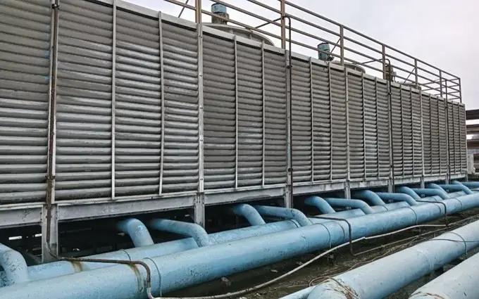

頂樓散熱水塔實拍大型空調與冷卻水塔清洗保養
針對商辦、賣場與科技廠房之圓型、方型及密閉式冷卻水塔，依規模、並聯隔離條件與可停機時段規劃清洗作業。
- 散熱風機斷電掛牌、旋轉播水頭與重力播水盆疏通
- 散熱材沖洗前先評估脆化狀況，底盤淤泥抽除與過濾器清潔
- 搭配冷卻水塔清洗加購 25kg 氯錠每桶 NT$ 2,900 免運（用途與承運另確認）
皓盛有限公司 · HAO SHENG CO., LTD.
需要定期保養，或設備有異音、不順？把設備照片、數量和目前問題傳給我們，一起確認怎麼處理。北部提供馬達、風機與泵浦維修；大型空調、冷卻水塔及自來水塔清洗可洽詢全台安排。
統編 90221911 · 工程專線 0916-093-125
全棟設備保養與清洗
從頂樓冷卻水塔、商辦室內空調、機房馬達閥件到地下室蓄水池清洗，下滑即可檢視各樓層施作重點、實拍與參考價格。

頂樓散熱水塔實拍針對商辦、賣場與科技廠房之圓型、方型及密閉式冷卻水塔，依規模、並聯隔離條件與可停機時段規劃清洗作業。
定期保養
想把空調保養固定安排好？先看設備種類、數量與使用時間，再討論一年要做哪些保養、多久做一次。
提供空調箱、送風機、冷卻水塔及相關機電設備的照片、型號與數量，確認需求與現況。
討論清洗與點檢範圍、可停機時段及進場條件；維修與零件更換是否納入，另行確認。
確認頻率、工作項目、排程與驗收方式後提供專案報價。網頁單次報價不等同年度契約價格。
案場縣市、設備種類與數量、設備照片、目前問題、可停機時段。
服務項目
服務地區
空調、水塔清洗與馬達、風機、泵浦等機電維修，依設備與現場條件安排。
中南部以大型案場為主。請提供地點、設備數量與照片，其他清洗需求也可詢問。
人員資格
師傅持有冷凍空調裝修乙級、丙級技術士證照。
全體員工均接受6小時勞安訓練；另有人員接受甲種職安主管訓練，並具缺氧作業主管相關資格。
為保護個資，證號不公開；業主有需要可於施工現場查驗。
施工準備
設備隔離、停水停機、局限空間與高處作業，須依實際場況確認人員、資格、設備及安全措施。
依水塔構造、是否入槽及現場危害，評估施工方式，並依適用法規安排受訓人員與安全措施。開放式白鐵水塔若確認全程不入槽，可按不入槽方式評估；如需入槽或現場條件未明，應先確認適用要求，不能僅以材質或「開放式」名稱判定免除。
文件與責任職安資格、保險、作業計畫與驗收文件，以報價及進場前提供的有效資料為準。職安責任依適用法令、實際作業與契約認定；保險或承諾文件不代表業主免除法定責任。
本頁提供服務介紹與費用參考；報價依客戶填寫的資料產生，若現場條件不同，施工前由雙方確認調整。人員配置、使用料件、檢查測項、施工與交付時間、驗收、發票及保固條件，須於承接前逐項確認；不以本頁作合規或成果保證。
可指定時段安排專車，或選擇平日彈性併單。以下為未稅價格，開立發票另加 5%；工時、人員配置與檢查範圍於報價時確認。
| 工程服務項目 | 適用規模與規格 | 指定時間方案：指定時段專車 | 平日順路方案：平日彈性順路併單 | 施工與檢查確認事項 |
|---|---|---|---|---|
| 頂樓小型不鏽鋼水塔清洗 | 10噸內開放式白鐵單塔（限全程不入槽） | NT$ 4,600 起 | NT$ 3,800 起（多顆併洗 3,000 起） | 浮球與進水球閥點檢範圍另確認 |
| 中小型華廈上下水池清洗 | 20~50噸單棟（1下池＋1上池） | NT$ 13,000 起 | NT$ 10,500 起 | 資格與編制另核對＋機電檢查內容另確認 |
| 標準社區大樓上下水池清洗 | 60~120噸單棟（1下池＋1上池） | NT$ 23,000 起 | NT$ 17,500 起 | 作業配置依現場確認＋61F-G2點檢範圍另確認 |
| 大型社區與商場雙池清洗 | 150~250噸以上雙池系統 | NT$ 27,000 起 | NT$ 24,000 起 | 抽排方式依現場確認＋閥件檢查範圍另確認 |
| 小型商用空調冷卻水塔保養 | 50RT 以內單座開放式水塔 | NT$ 7,000 起 | NT$ 5,500 起 | 水盤除泥＋散熱材沖洗＋電流檢測範圍與費用另確認 |
| 中型商場/商辦冷卻水塔保養 | 60RT ~ 150RT 空調冷卻水塔 | NT$ 13,000 起 | NT$ 10,500 起 | 散水頭／播水盆疏通與皮帶軸承點檢範圍另確認 |
| 大型廠房/商場冷卻水塔保養 | 200RT ~ 500RT+ 大型冷卻水塔 | NT$ 23,000 ~ 27,000 起 | NT$ 17,500 ~ 24,000 起 | 高處與入塔配置另確認＋減速機／Y型過濾器檢查範圍另確認 |
| 小型閥件與 61F-G2 液位更新 | 2吋內 PVC 球閥 / 61F-G2 含電極棒 | NT$ 3,800 ~ 4,500 起 | NT$ 3,500 ~ 4,200 起 | 控制器與電極棒規格另確認 |
| 2吋~4吋蝶閥／無聲逆止閥／軟管抽換 | 蝶閥（規格待核對） / 不鏽鋼無聲逆止閥（水錘問題另評估） | NT$ 11,000 ~ 15,000 起 / 處 | NT$ 11,000 ~ 15,000 起 / 處 | 同日抽換可行性及停水洩壓安排另確認 |
| 大口徑 6吋~10吋齒輪式蝴蝶閥／逆止閥 | FCD鑄鐵本體 / SUS304蝶板齒輪閥與逆止閥 | NT$ 22,000 ~ 32,000 起 / 處 | NT$ 22,000 ~ 32,000 起 / 處 | 含吊裝拆除、EPDM墊片、304螺栓與試壓 |
| 機電檢修：空調箱(AHU)／FCU／分離式維修 | 風鼓葉輪 / 馬達培林 / 電容 / AHU重型連座軸承 | 分離式/FCU $3,500~$11,000起｜AHU大修 $28,000~$38,000起 | 分離式/FCU $2,500~$8,500起｜AHU大修 $28,000~$38,000起 | 拔輪換NSK（型號及產地須確認）培林＋皮帶對心＋電流實測 |
| 機電檢修：水塔播水頭／減速機／循環與給水泵 | 旋轉播水頭 / 風機減速機 / 冰水泵 / 揚水加壓泵 | 播水頭 $4,500~$38,000起｜馬達減速機大泵 $9,000~$98,000起 | 播水頭 $4,500~$38,000起｜揚水加壓泵搶修 $5,500~$30,000起 | 耐磨碳化矽機械軸封＋聯軸器對心校正 |
| 水質送驗需求（實驗室、測項與安排另確認） | 自來水大腸桿菌群 / 冷卻塔退伍軍人菌 | NT$ 3,500 起 / 點 | NT$ 3,000 起 / 點（隨洗併單） | 現場水質測項及第三方送驗機構、費用、時程另確認 |
| 冷氣與中央空調深層清洗保養 | 四方吹 / 吊隱式FCU / 空調箱AHU / 分離式 | NT$ 12,500 ~ 15,000 起（專車包套） | NT$ 10,000 ~ 12,500 起 | 含電腦板防水保護＋果凍淤泥疏通改善滴水 |
線上立即估價 → 不確定設備規格？可加 LINE 傳照片詢問。
聯絡皓盛
政府立案統一編號 90221911｜大型空調、冷卻水塔與自來水塔清洗提供全台專案評估；北部服務雙北、桃園、新竹以北。中南部以大型案場為主，其他需求可個別洽詢。
允許 Google Analytics 分析瀏覽與入口點擊，協助改善網站？不同意也能正常估價與聯絡。
同意後，皓盛會使用 Google Analytics Cookie 統計一般頁面與電話、LINE、服務及估價入口的點擊，協助改善網站。Google 會處理瀏覽器、裝置及網路連線資訊；本網站不把報價內容、姓名、電話、地址或完整來源網址傳入分析。不載入報價頁的分析，也不統計含查詢參數或片段的頁面。不同意不影響估價與聯絡功能。
選擇會盡可能在此瀏覽器保存 180 天，適用本網站各頁；可隨時按「隱私設定」變更或撤回。清除瀏覽器資料或無法保存時，可能需要重新選擇。Google 分析 Cookie 期限為 180 天。Google 如何使用資料